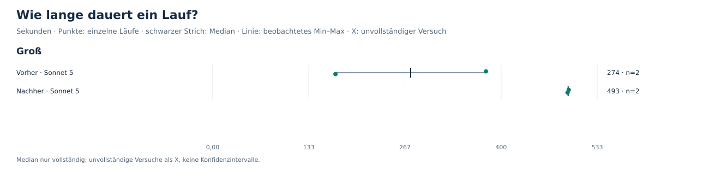
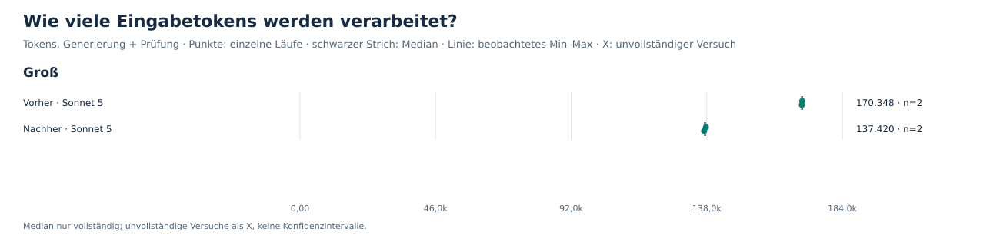
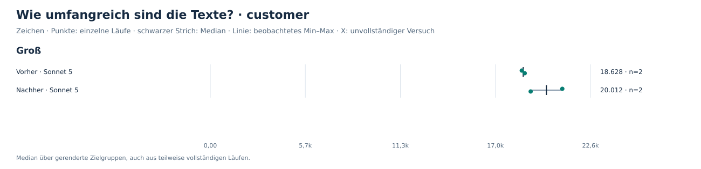
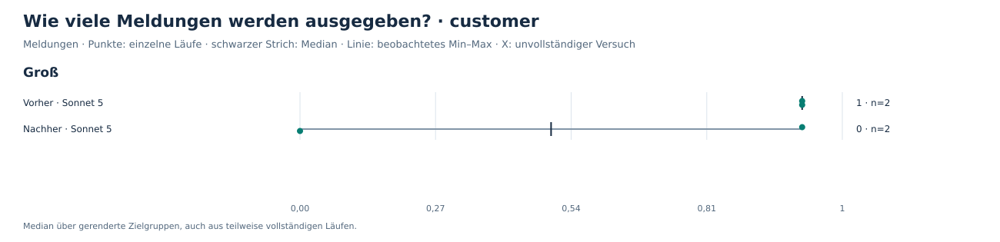

Chartula · gespeicherte Messergebnisse
Änderung #338: vorher und nachher
Vollständigkeit, API-Kosten, Wartezeit und Prüfermeldungen aus vorhandenen Läufen. Keine neue Generierung und keine Qualitätsbewertung.
Was die Daten zeigen
- Groß: 4 von 10 Versuchen vollständig.
- Vorher und nachher haben jeweils zwei vollständige Läufe, unterschiedliche Chartula-Commits und unterschiedliche Prompt-Hashes.
- Sechs weitere Versuchsfolder haben keinen Run-Record; ihre Dauer und Kosten bleiben unbekannt.
- Eine historische Preistabelle für claude-sonnet-5 fehlt in diesen Sweep-Daten; deshalb erscheinen keine Kostencharts.
Prüfermeldungen sind Beobachtungen eines Prüfers. Ihre Zahl misst weder bestätigte Fehler noch Textqualität.
1. Vollständigkeit
Jedes Quadrat steht für einen Versuch; auch Fehlversuche und fehlende Records bleiben sichtbar. SVG · PNG3. Wartezeit

Gesamtdauer inklusive Arbeit außerhalb der Modellphasen. Fehlende Dauer wird nicht als null ersetzt. SVG · PNG5. Eingabemenge

Tokens hängen auch vom Tokenizer ab. Vergleiche zwischen Anbietern sind keine direkte Messung der Informationsmenge. SVG · PNGTextumfang · customer

Zeichen im gespeicherten Rendering, einschließlich Markdown. Länge und Zahl der Einträge messen keine Qualität oder Faktenabdeckung. SVG · PNGPrüfermeldungen · customer

Eine Meldung ist keine bestätigte falsche Aussage. Weniger Meldungen können ebenso aus weniger Text oder einem anderen Prüfverhalten entstehen. SVG · PNGWiederkehrende Meldungen · customer
Gezählt wird, welche PR in derselben Zielgruppe wiederholt Meldungen erhält. Die Begründung kann sich zwischen Läufen unterscheiden; Meldungen ohne PR-Zuordnung sind hier ausgeschlossen. SVG · PNGZahlen und Bezugsgrößen
| Szenario | Konfiguration | vollständig | Median USD ohne Cache | Median Sekunden | Cachekosten aller Versuche | Ausgaben / vollständige Läufe |
|---|
| Groß | Vorher · Sonnet 5 | 2/6 | unbekannt | 274,5 | unbekannt | unbekannt |
| Groß | Nachher · Sonnet 5 | 2/4 | unbekannt | 492,8 | unbekannt | unbekannt |
Ausgaben / vollständige Läufe = Kosten aller Versuche geteilt durch die Zahl vollständiger Läufe. Nur bei vollständigem Kostenwissen und mindestens einem vollständigen Lauf berechnet; keine Prognose der Kosten einer Wiederholungsstrategie.
Szenarien und Eingabematerial
| Szenario | PRs | Fakten | Fakten mit Beschreibung | Beschreibungszeichen in den Fakten |
|---|
| Groß | 95 | 88 | 81 | 215416 |
Größe allein beschreibt die Eingabe nicht: Der schwierige Fall hat kaum Beschreibungen. Angaben stammen aus Run-Records, nicht aus einer Größenabschätzung. Mehrere Werte zeigen unterschiedliche Faktentiefe innerhalb einer Reihe.
Konfigurationen und Herkunft
| Konfiguration | Generierung | Thinking | Prüfung | Check-Thinking | Faktentiefe |
|---|
| Vorher · Sonnet 5 | claude-sonnet-5 | provider-default | claude-sonnet-5 | provider-default | title-and-description |
| Nachher · Sonnet 5 | claude-sonnet-5 | provider-default | claude-sonnet-5 | provider-default | title-and-description |
0.1.0-preview.3+02cfc950cdceb40220bfe471caf7508e5d7f6e560.1.0-preview.3+cd04513e1cb271b9479d1cb5564e4258b36f5668
Preisbasis: unbekannt.
Grenzen und Methodik
- Die Ergebnisse beschreiben diese Releases und Einstellungen; sie sind keine allgemeine Modellrangliste.
- Einzelwerte und beobachtete Spannweiten zeigen Wiederholungen am selben Release, keine Konfidenzintervalle.
- Kosten mit fehlenden Nutzungsangaben sind Untergrenzen, falls costIsLowerBound gesetzt ist; daraus folgt kein vollständiger Gesamtpreis.
- Die Texte werden pro Konfiguration neu erzeugt; Prüferunterschiede können hier nicht isoliert werden.
- Judging und Rubriken bleiben eingefroren; es werden keine Qualitätsurteile erzeugt.
- Faktische Korrektheit, Vollständigkeit der Aussagen und Nachbearbeitungsaufwand wurden hier nicht bewertet.
- Kosten nach Cache sind anhand gespeicherter Nutzung und historischer Preise berechnet, nicht anhand einer Rechnung verifiziert.
- Pro Zielgruppe werden auch Texte teilweise vollständiger Läufe berücksichtigt; fehlende Texte sind keine leeren Texte.
- Lokale Arbeitsfassung: keine Rohtexte, Meldungsbegründungen oder Schlüsselkennungen im Export; Repository- und PR-Metadaten vor öffentlicher Veröffentlichung prüfen.
Daten herunterladen
Alle Vergleichsreihen